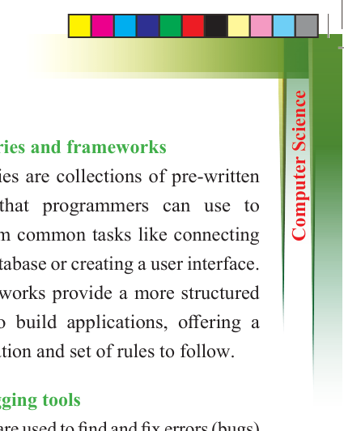
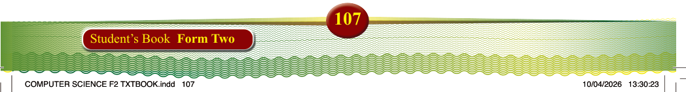
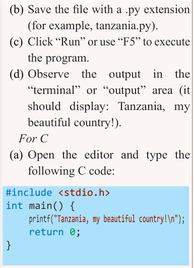
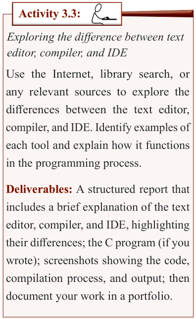

107
Student’s Book Form Two
(b) Save the file with a .py extension
(for example, tanzania.py).
(c) Click “Run” or use “F5” to execute the program.
(d) Observe the output in the
“terminal” or “output” area (it should display: Tanzania, my
beautiful country!).
For C
(a) Open the editor and type the following C code:

#include <stdio.h> int main() { printf("Tanzania, my beautiful country!\n"); return 0;
}
(b) Save the file with a .c extension
(for example, tanzania.c).
(c) Click Run or use F9 (in
Code::Blocks or Dev-C++) to
execute the program.
(d) Observe the output in the console area (it should display: Tanzania, my beautiful country!).
Deliverables:
1. Identify key parts screenshots of key parts of the editor (code area, output, run or start).
2. A simple program (text-based or block-based).
3. A short written reflection after exploration of an editor.
Document all your findings in a
portfolio.
Libraries and frameworks
Libraries are collections of pre-written
code that programmers can use to
perform common tasks like connecting
to a database or creating a user interface.
Frameworks provide a more structured
way to build applications, offering a
foundation and set of rules to follow.
Debugging tools
These are used to find and fix errors (bugs)
in code. Debuggers help programmers
step through their code to identify the
source of problems.

Activity 3.3:
Exploring the difference between text editor, compiler, and IDE
Use the Internet, library search, or any relevant sources to explore the differences between the text editor,
compiler, and IDE. Identify examples of
each tool and explain how it functions in the programming process.
Deliverables: A structured report that
includes a brief explanation of the text editor, compiler, and IDE, highlighting their differences; the C program (if you wrote); screenshots showing the code,
compilation process, and output; then
document your work in a portfolio.